How do you spell HOTEL in Kazakh
Wow! Not even 5 o’clock in the morning, I had already gotten up, climbed out of my tent,
which had no insulation effect whatsoever.
I washed my face with the freezing water, and found my eyes bags were as big as walnuts,
thanks to those “sleepless” truck drivers.
I went into the restaurant and found that waitress had the same eyes bags like mine.
Thanks for her kindness; she brought me a pot of hot milk tea,
which warmed me up from my heart to every single part of my body. And she even refused to let me pay for it.
I filled up my three water bottles before took off. It was really a great thing to travel in a country that tap water is drinkable.
I remembered when I biked in France, I might not pay attention to all the beautiful scenery in that country,
but the instinct of looking for drinking water never failed me.

I should get going now, 6:30 in the morning.
It was better to leave early, plus the weather was cooler, I hoped I can keep this good habit.
It was downhill after leaving Koback (phonetic translation),
this long ride totally swept away my frustration from yesterday.

I was not complaining about the uphill biking experience, but the road condition in Kazakhstan was terrible,
so the experience here was really tiresome and frustrating.
Today was different. Not only I was biking downhill, and the road condition was great, and the air was fresh.
Well, except the birds flying above my head like crazy, as if they were practicing some routines.
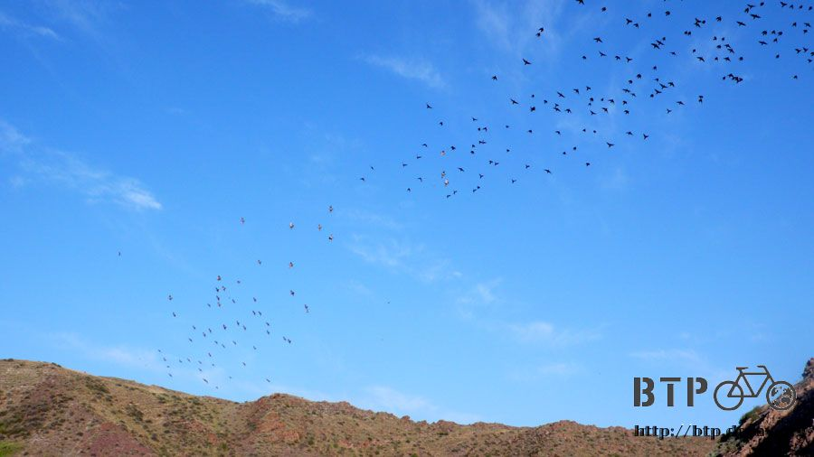
Talking about the birds, I have to tell you my first impression about this country.
This was my third day in Kazakhstan; I was already very impressed about the terrible road condition,
and the dead animal bodies, such as porcupine, cat, dog but mostly birds, everywhere.
You can recognize some birds by the shape, but lots of them can be only identified by the feathers lying on the ground.
In China, construction workers repairing the road were a usual sight when I biked, but there was none here.
This one was supposed to be one of the major highways, but if in China, this could only be at the best the country road.
It seems like once the road built, no maintenance is necessary.
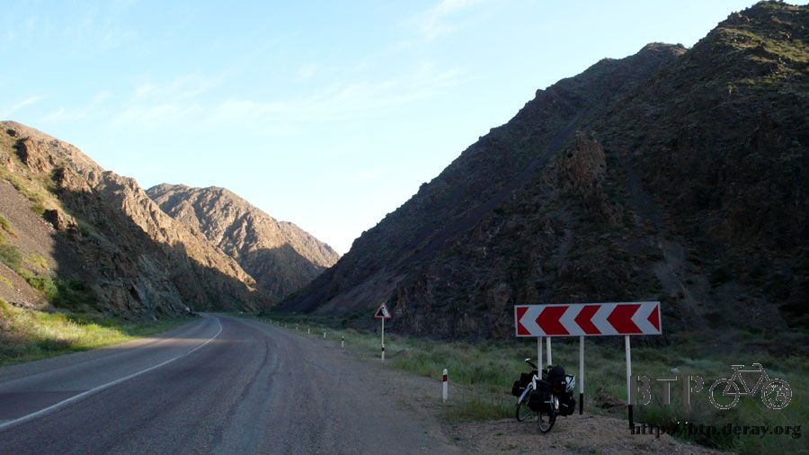
My “happy hour” was gone as soon as I finished the downhill part of the road,
now I was climbing up, and the road condition was “down”.
Since there was still 160 km to Almaty, I didn’t want to force myself to finish that in one day,
which meant, I would just take it easy. I would like to have a good night sleep if I could find any nice place to spend the night.
I didn’t want to BUY any more maps at all, especially if I can find the big city without much problem.
The map would be labeled with names of the city, not the roads or the directions.
I was pretty confident that I could easily get my direction with that 10-tenge map and the Google Earth.
Well, unless the next part of the country I was going to ride has a better road/highway system,
then I might consider to get a new map.
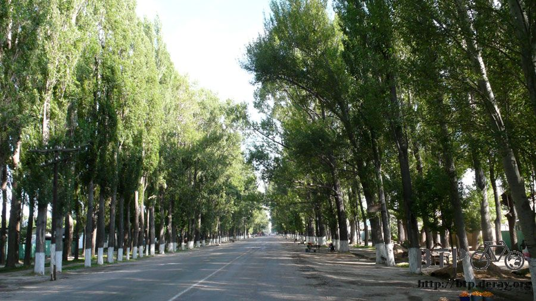
There were three donkeys waiting for the bus? I was laughing so badly that I almost fell down from my bike.

I couldn’t stop myself but buying 100 tenges of prunes.
I didn’t want to buy too many, so I gave out my biggest coin, 100 tenges.
But from her face, it seemed like they usually sell that by bucket, she was calculating how many this 100 tenge could buy.

Well, let me help. I found a plastic bag from my pack, and handed to her. She thought about it and gave me lots of prunes.
Those prunes were neither sweet nor sour.
The lady showed me how to eat the stuff inside the pit, by cracking it with rocks.
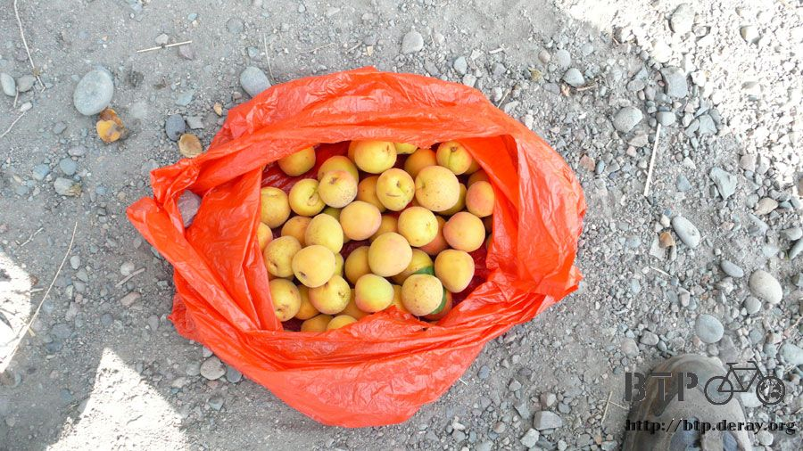
Other than prunes, you can also buy drinks, but I was guessing this was not for me.

Sometimes kids would run after me for fun. Most of the bikes in Kazakhstan have their wheels
decorated with colorful plastic stuff; this one was relatively “plain”so to speak.

I was riding my bike and eating my prunes, and I thought I should still stop for this old time friendly place—gas station.
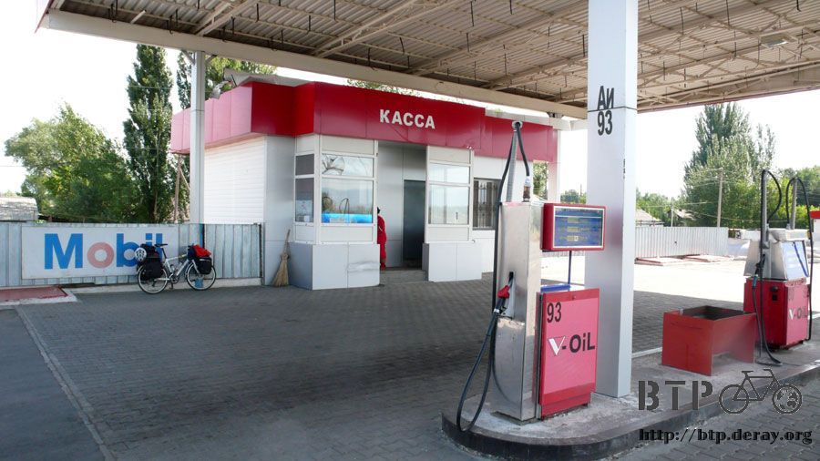
I didn’t want coke anymore, so I bought myself a liter of orange juice, to replenish my vitamin C.
I also got a chocolate bar and a pack of crackers.
I was trying to understand the “money culture” from the great varieties of bills I got back from the casher.


I knew to cool down was not enough for me, what I really needed now was sleep.
I didn’t get much of sleep at all last night.
However, I finally adjusted myself back to an “early bird” mode; I didn’t want to spend my morning to SLEEP.
So, maybe, I should continue riding my bike until noon?
I leaned a couple of new Kazakh words everyday, today were “one” and “bike”.
I also tried to correct the pronunciation of the words I learned earlier.
The language was only useful if other people can understand what I was saying.
I wanted to practice them enough that I could say them out any time I need to, without thinking it first, I mean.
The dogs were not a rare sight in Kazakhstan; I was run after by 4 dogs today, luckily not the big or evil type.
I usually “barked” back at them to scare them away.
Sometimes I missed the days when I biked in China, which was “dogless”.
I was pretty nervous now whenever I heard any suspicious sound at my back.
I finally found an abandoned gas station to take a nap around noon.
There was many sheep’s dung here, but no flies were attracted since there was no stinky smell.
I had such a good nap that I thought I could almost live here, as long as I get my good sleep.
Around 1 o’clock, I did some grocery shopping, and lunch too.
I saw a carton of “milk” in the refrigerator, and it turned out that was yogurt.

Thank god that I was not exactly expecting that was milk, otherwise, I would probably throw up after my first sip.
Oh, I also got myself an ice bar. Scanning through every aisle,
I really couldn’t find anything interesting for lunch, so I ended up getting an instant noodle and a pack of crackers.
Instant noodle was more or less the same everywhere I went, just another choice for lunch.

I passed several towns on the way to Almaty.
Some with signs but no sight, I guessed that was because lots of towns were not near the highway,
you needed to make turns to find it. As many towns passed by, all I could see were grocery stores,
coffee shops, or vegetable stands. But where was the hotel?
I asked at lest three people before I believed that there was NO hotel at every town I stopped.
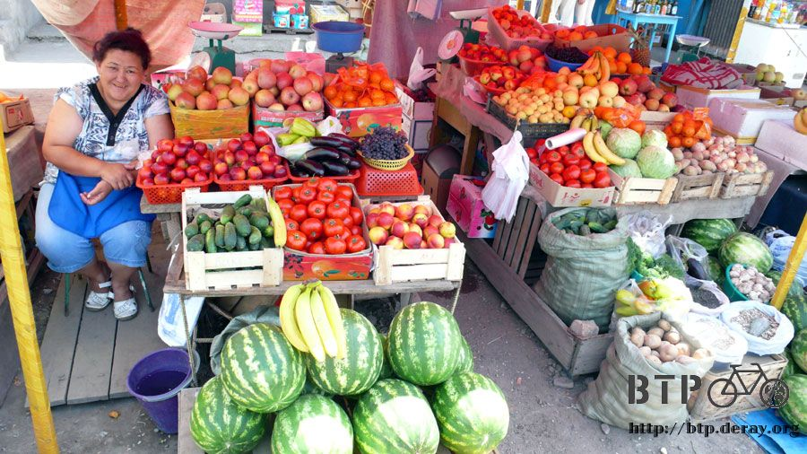
“Be aware of running pedestrians!” Never saw this kind of sign before.
Kazakhs drive fast and crazy. Most of the cares were antique cars, not many trucks.

You usually could find “bike only” lane, but the road condition was just “terrible”.
Even though the bike only lane was mostly shaded, the horrible road condition still put me off most of the time.
I usually just bring my bike back to the regular highway.
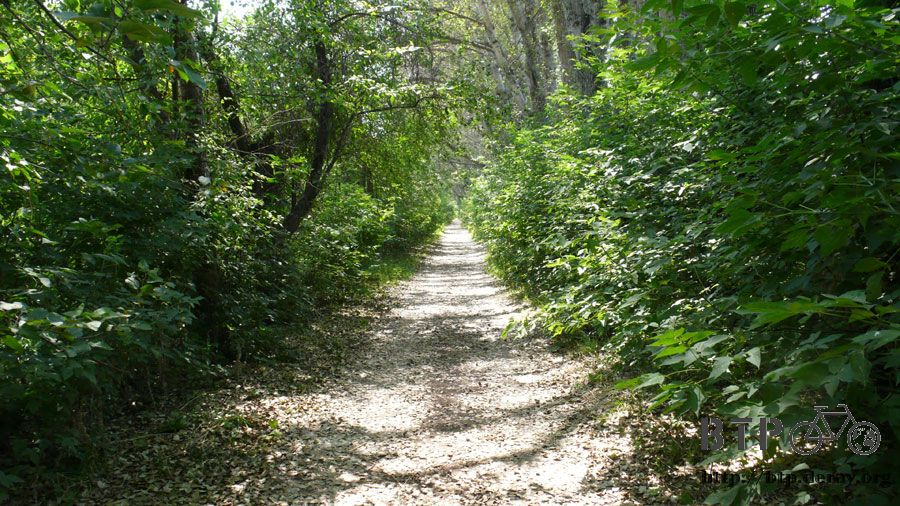
These were the produce. I thought Kazakh people don’t like to plant stuff,
and that is why so many lands were empty. But, see? You can actually find most what you need here.
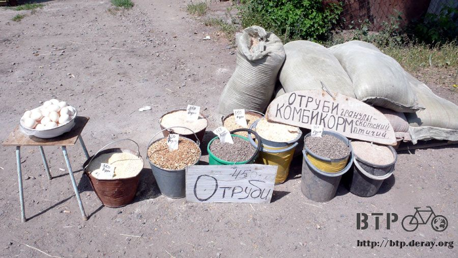
It was almost like an outdoor supermarket, I wanted to buy everything, but I didn’t get anything.
I couldn’t believe they even sold inflatable water toys, I was wondering:
WHERE was the water that you could play those toys in?

Actually, I didn’t particularly care if I could find a hotel for the night or not.
What I really wanted was a place to wash my clothes.
I kind of started to disgust my own clothes at this point. I sweated everyday; I was wet from top to bottom.
Yes, don’t take me wrong. Of course I had every intention to wear clean outfit,
but I couldn’t find any place to wash the dirty ones.
I did rub my body clean everyday before going to sleep, buy my
“clean” body soon then was covered by those filthy clothes that I wore over and over.
Sometimes I could even breathe my own stinky smell while biking.
I needed hotel for its water to wash my clothes, and its space to dry my clothes after I washed them.
I would be thrilled if I could even take a nice shower and have a good nice sleep.
As a matter of fact, I wouldn’t mind camping everyday as long as
I have unlimited supplies of fresh and clean clothes at the same time.
Some people have houses like this: with number marked on the tree trunk,
with a simple gate as the “entrance”, and the little path before entering the real house,
which was hidden in the deep end of the woods.
I saw many houses with similar arrangement, as if they were playing hide-and-seek.
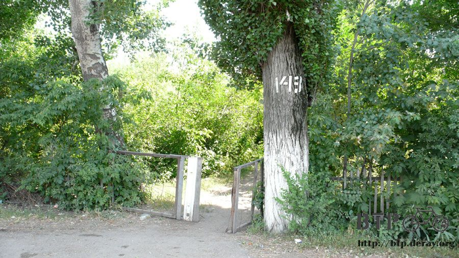
Well, I was thirsty again, time to get a drink. I was a bit sick of juice now,
that was why I got milk instead at noon.
Uh… I wondered what was inside this big white bottle; I saw kids drank that earlier,
so I asked the cashier how was that thing taste like.
Well, of course he said, “great!” why did I even bother to ask? I got one anyway.
I heard a pop sound when I twisted the lid, which made me wonder if that was some kind of carbonated water.
Very carefully (don’t ask me why), I took the first sip.
I almost threw up right there… It was sour and strong, and the cashier dared to say that tastes great!
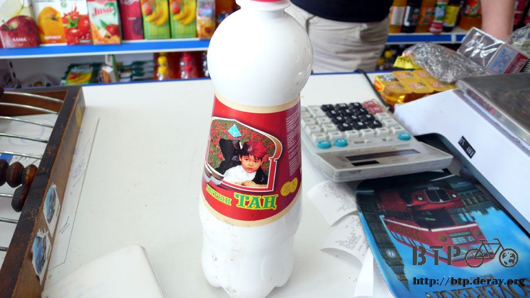
He looked me and suggested me to shake it before I drink it.
As far as I could understand, this thing was a fermentation product of milk,
after some who-knows-what process, it became a bubbling yogurt drink,
which was definitely not my cup of tea. I bet some game show can use this as a penalty drink for “losers”,
no modifications necessary.
Well, I didn’t want to drink it and I didn’t want to throw it away, either.
Luckily, there was a homeless(?) guy just outside of the door,
I gave him the whole bottle, saved me a lot of trouble.
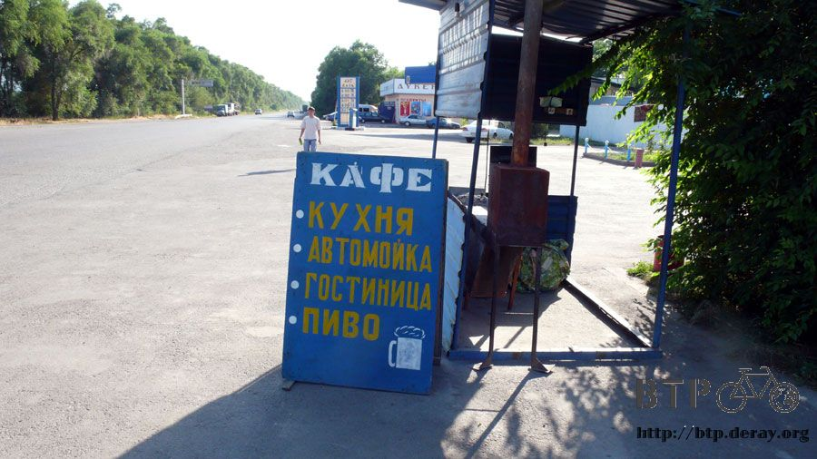
Finally, around 6 in the evening, I saw a sign showing very familiar letter arrangement.
I flipped open my notebook, bingo. That sign said, “HOTEL”.
Thank god that I got some useful information about Kazakhstan in my forum before I entered this country.
Otherwise, there was no way I could guess this spells “hotel” at all.

I asked for the rate, and I got a table. I could see the numbers and room number,
but what was the things on the first row? 1, 2, 3, more and more? Meant the number of people?

Anyway, of course I pointed to the cheapest one, and put out one finger (index finger) to say I was alone, 700 tenges.
Not too bad, actually.
Then… this was totally a misunderstanding. She thought I wanted to stay for one HOUR, not the one NIGHT.
The number indicated 1 hr, 2 hr, 3 hr, 1 night and 2 nights.
Therefore, I paid my 2500 tenges for a night, which was relatively expensive compared to that in China,
but kind of cheap if it is in Taiwan.

The first thing I did was to take a nice shower.
The bathroom in my room has only shower available (no toilet), which was exactly what I needed.
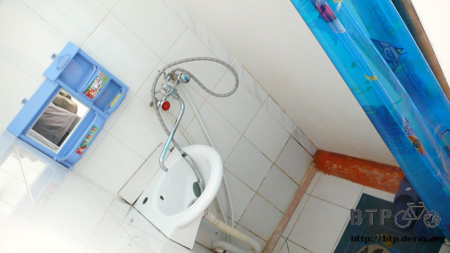
After cleaning myself from head to toe, I soaked my dirty clothes in hot water and laundry detergent,
and then air-dried them somewhere in the backyard.
I was determined to get my 2500 tenges worth.
I wanted to do the way the Fleck and Jacquin couple did, which was camping as much as possible in Kazakhstan.
I would only go to hotel when I couldn’t stand my own stinky smell anymore, for example, today.
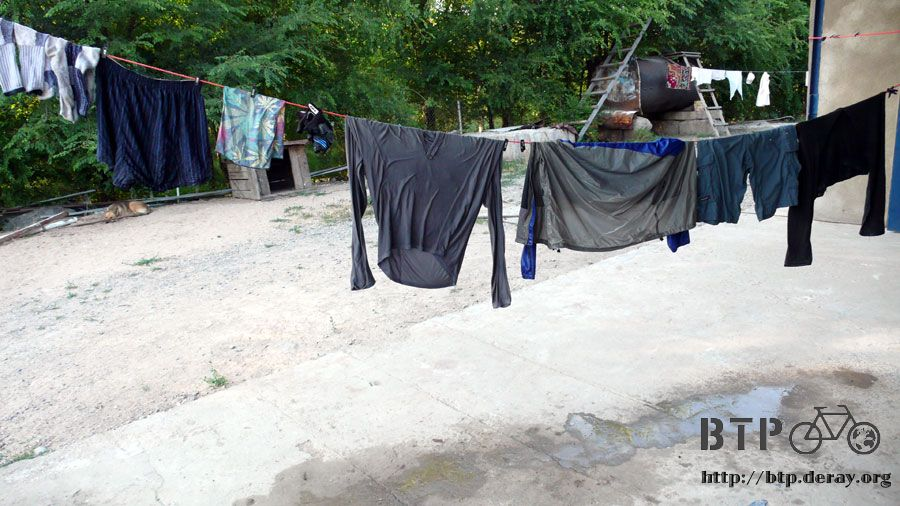
Since the hotel rate is rather high here, this seemed to be the way to reduce the expensive.
There was only 30 kms away from Almaty, which I could imagine the expense could go only higher,
why not spent the night here, which is cheaper.
As to tomorrow, I would stay with a friend’s house IF I could find that address,
otherwise, I would keep moving to the west side of the city, to save money.
There were not so many policemen around in this country.
Not that I needed their help, but it felt kind of weird since they were everywhere in China.
If anything happened in China, you just waited there patiently, eventually, some police will come by.
That was not the case here at all. The first police I saw was after I settled down at this hotel.
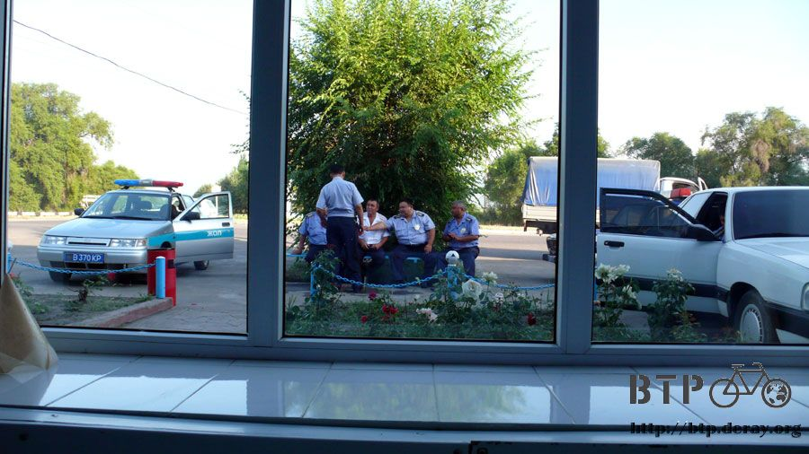
Well, their car was OK, kind of like a toy.

I had my dinner at the restaurant. As usual, I opened the menu, and asked them to order for me.
And the surprise dinner was “bread, milk tea and beef noodle”.

This was similar to what I had at Amazhen’s house,
but it FELT better when served with some elegant utensils.

For the beef noodle, the waiter even brought me a pair of chopsticks, very nice.
People always told me that Kazakhstan has cheap meat,
but expensive vegetable before I entered this country. I always doubted that, until now.
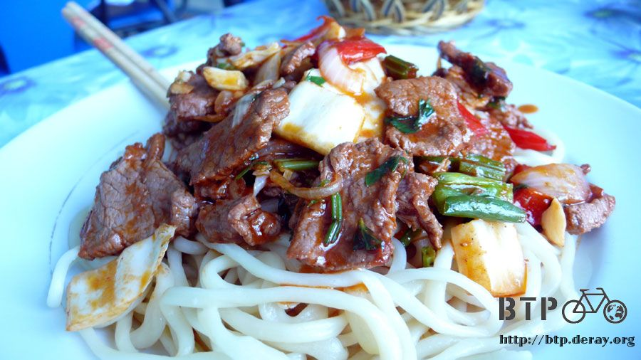
These bread and beef noodle couldn’t fill up my hungry stomach, so I ordered what other people ordered: mini-dumplings.
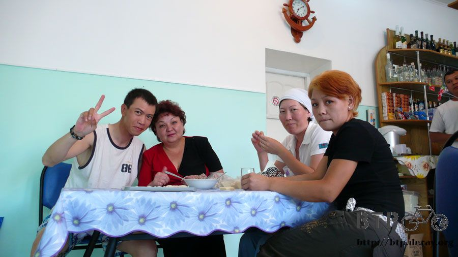
The size of these dumplings was about 1/3 of the regular size that you usually see in China.
They actually looked more like the dumplings/fishballs that we eat in hot pot in Taiwan, and they tasted really good.

This type of mini-dumplings was actually very common in any supermarket here.
Including 10 % of service charge, this dinner cost me 690 tenges, which is about 200 NTD,
which made me wish that I was still in China. Please send me back to China, the low expense heaven.